Here we take a look at the very interesting world of multiple star systems. But not just the fascinating world of the physics involved, but also we look at how these systems would influence the evolution of sentient life on planets within those systems. It’s a great subject and far larger than any trivial study of Newtonian physics applied to orbital bodies would ever be.
Why is this important?
Well, you see, where a physical species evolves from greatly affects the way it matures as it evolves. A fish in an ocean that relies on warn ocean currents cannot readily survive in the Arctic. A migratory species like ducks and geese would have a difficult time relocating to a planet with a different gravitational field, or in the presence of a much larger planetary neighbor.
In fact, the general odds are that they will not really care about other species that live outside of their inherent “comfort zones”.
You see, the science fiction ideal that humans can adapt all over the universe is wrong. Adaptation is difficult. It is difficult for most species, and while species can travel to the earth and visit us, the idea that they would settle down here, is not as easy as your would think.
That is true with their “interest” with us humans as well.
Pro Tip: The extraterrestrial species that interact with humans are from this general region within our galaxy. They are here for reasons, and for them, it really isn't all that comfortable. They need to generate special "environments" and "bodies" to function in this sphere of space (if they did not originate here). It's not just planetary considerations: air, temperature, humidity, type of light, food, enzymes, bacteria, germs, viruses, etc... It's the gravitational influences of stars, planets and moons on the biological behaviors of the extraterrestrial visitors.
And it’s not ONLY being in a “habitable zone” within a solar system that is important. It is many other factors. And one of the greatest influences is gravitational. Not only in the strength of a gravitational field (too strong is too uncomfortable, and too light cannot maintain an atmosphere.) but in the way the major gravitational bodies orbit around and near the planets that one inhabits.
To really understand other extraterrestrial species, you really need to understand the orbital dynamics of the solar system where they were evolved from.
It absolutely affects how they as a species "think". And in our universe, where thoughts control reality, it has a very great influence in... EVERYTHING.
Now, the study of the orbital dynamics of stellar bodies is (in itself) an awfully fun subject. Personally, I could spend hours writing about this stuff. I don’t know why I have such an affinity for it, but it’s just plain out cool. You know, crack open the fridge and pull out a beer and pop the top and delve right on in. Maybe order a pizza while you are at it.
Anyways, let’s get into the complexities of Orbital Dynamics 101 and then take a good interesting look at how these dynamics would influence societies and the evolution of native life.
The “Enlightened Ones”
Oh. Uh huh.
Some people believe that non-physical beings come from a physical place. And that they are interested in us humans.
Certain Pleiadians are highly evolved, more so than most of the human species. The Pleiadian Realm from the Pleiades is the next step or level in our human evolution. It is for this reason that certain knowledge is being given to us by specially enlightened Pleiadian beings. There are those that want to help us toward our higher spiritual destiny. These Special Pleiadian Forces reside at a very high frequency that is lighter than what we know. And thus, the term is often applied. The higher and lighter the frequency, the closer to the God source one becomes. Eventually, all will become Pure Light at the center of creation, which is God or Spirit or whatever name you choose to call it. As we evolve, gaining wisdom and true understanding about our real essence, we begin to open up more to Love, and to feel our connection with one another and the universe. In the Earth realm, Love is only experienced and known at a low level compared to all that truly exists. The God/Spirit frequency is beyond anything we know. It is Pure Love – It is is Pure Light. As we strive and come closer to that center of creation, we will know Love completely and be totally In the Light. -Pleiadians Come From The Pleiades Star Cluster in the Constellation Taurus
Uh huh.
Well, the actual way that this sort of things works is that you are the product of your environment.
And the physical environment around the Pleiades star cluster is anything but tranquil and peaceful. It is, rather a screeching howling mess of young hot stars and all sorts of quantum interactions which create a dangerous (to humans at least) stew of nightmarish complexity.
It might be beautiful. Sort of like how a leopard is beautiful right before it tears your arm off.
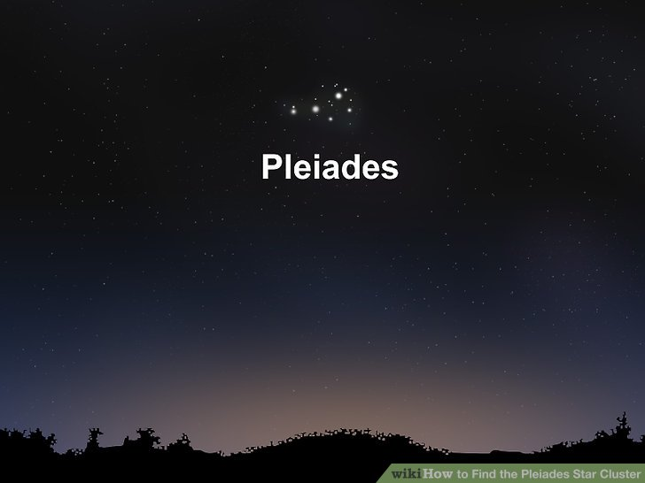
But, it’s completely at odds with the physical universe to expect that sentient physical creatures would happily evolve in this region.
For starters, the stars in this region are far too young. Our Sun is around 4 billion years old, and thus you have humans in our primitive state. These stars are just infants, not yet even babies, and to expect the evolution of intelligent life on a planet that (at best) is still gaseous and molten is ridiculous.
The Pleiades star cluster, also known as the Seven Sisters and Messier 45, is a conspicuous object in the night sky with a prominent place in ancient mythology. The cluster contains hundreds of stars, of which only a handful are commonly visible to the unaided eye. The stars in the Pleiades are thought to have formed together around 100 million years ago, making them 1/50th the age of our sun, and they lie some 130 parsecs (425 light years) away. -The Pleiades
A typical Solar System in the Pleiades
Most large stars (in our universe) are part of enormous solar systems. For the Pleiades it is even more pronounced. How do we know? Well, we can see it with our own two eyes.
These solar systems have two, three, four, five and more (!) stars all orbiting each other in complete (apparent) disarray.
Consider Alcyone.
Alcyone, Eta Tauri (η Tau) is a multiple star system located in the constellation Taurus, the Bull. With an apparent magnitude of 2.87, it is the brightest star in the Pleiades cluster. Following the well-known naming conventions, the primary star in the system, formally named Alcyone, has three companions.
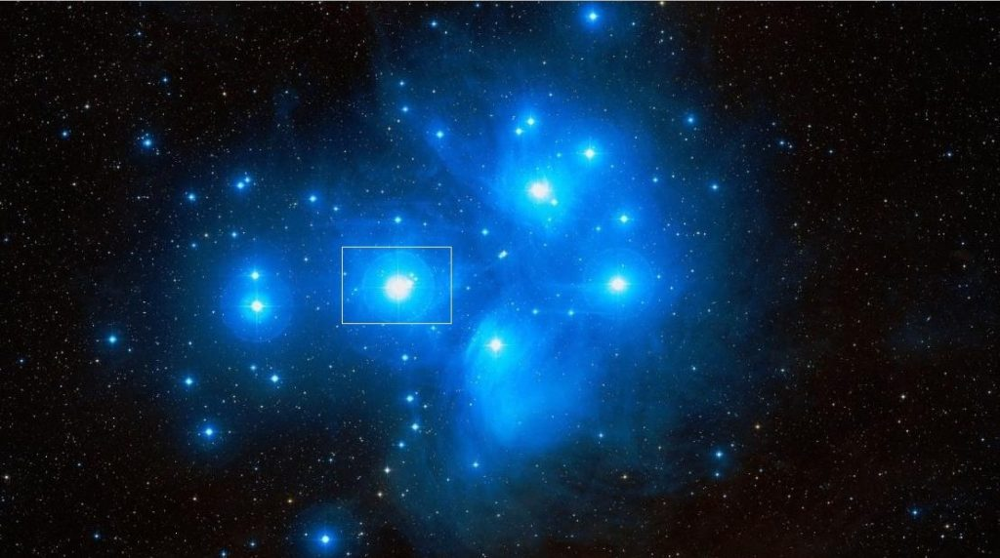
They are;
- Alcyone B (24 Tauri); a white (A0) main sequence star.
- Alcyone C has the variable star designation V647 Tauri and is classified as a Delta Scuti variable.
- Alcyone D is a white (F3) main sequence star with a visual magnitude of 9.15.
So right off the bat, we know that the most visible star in the Pleiades is a four-star system. In fact, almost all of the other visible stars in the Pleiades are multiple star systems.
Imagine that!
Stars are generally in binary, trinary or larger solar systems. In fact, four star systems are not rare at all…
“About four percent of solar-type stars are in quadruple systems, which is up from previous estimates because observational techniques are steadily improving,” said co-author Andrei Tokovinin of the Cerro Tololo Inter-American Observatory in Chile. The planet in the system is a gas giant, with 10 times... -Planet discovered in four-star solar system - ZME Science
Four star systems are pretty interesting. Here’s a nice graphic on the orbital arrangement of system 30Ari. This image shows the newly discovered planet around 30AriB, which would be designated 30Ari-B-a (I would guess.).
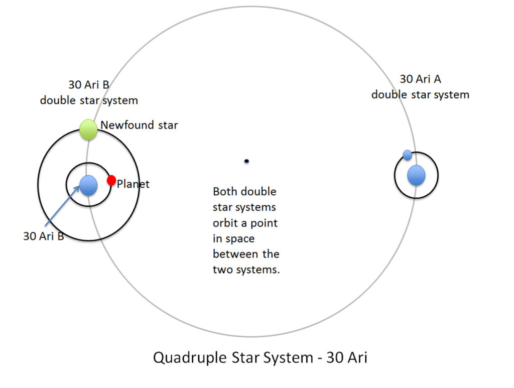
Some other stars.
I just cannot get the idea out of my skull that there are those that believe that “Star Children” and other “advanced” extraterrestrials from the Pleiades want to help humans on earth. It really is preposterous.
Pleiadians : Human Like Extraterrestrial Light Beings ... https://www.psychedelicadventure.net/2009/02/... The Pleiadians or the Plejarans as revealed to Billy Eduard Meier are human like Extraterrestrial beings who originate from a world known as Erra, one of the 10 planets orbiting the star Taygeta, located in the Pleiades (or the Seven Sisters). The Pleiades can be found in the constellation of Taurus, the bull. They are about 400 light years away from us. 10 10 10 Spiritual Mastery · Eckhart Tolle Stillness Speaks Pleiadians - A Thorough Explanation https://www.tokenrock.com/explain-pleiadians-138.html Salla and other associated researchers confirm the existence of extraterrestrials who can easily integrate with human society as being from star systems such as Lyra, Pleiades, Sirius, Procyon, Tau Ceti, Ummo, Andromeda and Arcturus. Pleiadians - The People of Erra - AliensPleiadiansThe Pleiadians are said to be a collection of alien species who hail from a small star system in the Taurus constellation, Pleiades. According to sources the Pleiadians allegedly inhabit a number of planets withing the Pleaides star system including planets by the names of Erra, Ptaah, Quetzal and Semjase with Erra current serving as...
The sad thing about all this is that there are people that believe this nonsense, and what’s worse expect me to somehow validate it.
Just for “shits and giggles” let’s look at some of the other stars in the Pleiades star cluster.
Asterope is a main sequence star with the stellar classification B8 V. It is part of a binary star system. The star is part of a double star system sometimes referred to as Sterope I and Sterope II. The two stars, 21 Tauri and 22 Tauri, both belong to the Pleiades cluster. Both are “fast spinners”.
Electra has the stellar classification B6 IIIe, indicating a giant star appearing bluish in color. It has a mass about five times that of the Sun and a radius 6.06 times solar. With an effective temperature of 13,484 K, it is 940 times more luminous than the Sun. The star is a very fast spinner, with a projected rotational velocity of 181 km/s, and possibly more at the equator. The star’s estimated age is 115 million years. It is part of a binary system. Electra has a close companion less than an astronomical unit away. The two stars have an orbital period of about 100 days.
Taygeta is part of a binary star system designated 19 Tauri A. It has the stellar classification B6IV, indicating a subgiant star appearing blue-white in color. 19 Tauri A is a spectroscopic binary whose components are separated by only 0.012 seconds of arc. The two stars complete an orbit every 1,313 days (3.6 years) with an average separation of 4.6 astronomical units. The companion is considerably fainter, with an apparent magnitude of 6.1. It is believed to also be a class B star with about 3.2 solar masses and a luminosity 150 times that of the Sun.
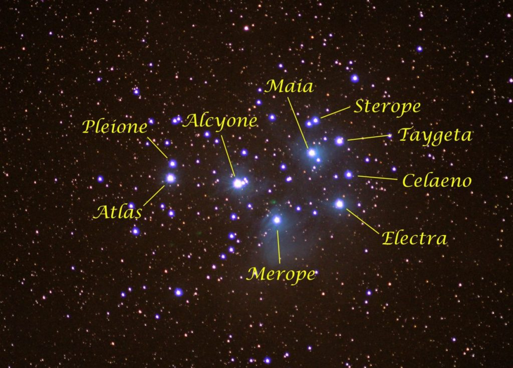
Atlas, 27 Tauri (27 Tau), is a multiple star system located in the constellation Taurus. It is one of the brightest members of the Pleiades (Messier 45), one of the brightest and nearest open clusters to Earth. Atlas has the stellar classification B8 III, indicating a blue-white giant star. The star has a mass 4.74 times that of the Sun and a radius twice solar. With an effective temperature of 13,446 K, it is almost 1,000 times more luminous than the Sun, but most of its energy output is in the invisible ultraviolet part of the spectrum. Atlas may appear as a single star to the naked eye but is in fact a binary star with components that complete an orbit around each other every 290.984 days. The components, Atlas A and Atlas B, have apparent magnitudes of 3.84 and 5.46. Both stars are slightly variable.
Pleione, 28 Tauri (28 Tau), is a binary star system located in the constellation Taurus. It is one of the brightest members of the Pleiades cluster. Pleione is a binary star consisting of a young, hot class B star and a companion whose properties are uncertain. The primary component, formally named Pleione, is a main sequence star with 3.4 solar masses and a size of 3.2 solar radii.
An apt description of this region.
This area is a stellar version of a blast-furnace. An enormous group of hot, energetic gasses collected in the region (fairly recently ago, by stellar standards), and started to ignite. As a result, huge orbs of gasses collected and formed into very hot stars, and as they formed and their gravitational mass started to acquire, they started to orbit around each other. Groups and clusters formed.
This all happened really quickly (in galactic terms).
So the idea that physical life has evolved, and obtained intelligence in this region is far fetched. It really is.
But…
But…
Perhaps in four or five billion years, these stars will start to chill out and evolve, form rocky planets and life can begin to evolve. And when that happens, what would it be like for those upon planets around these stars/
Orbits of nearby planetary bodies affect how species evolve
This is well understood. As we know for a fact how our nearby moon has affected our evolution and day to day lives. We know that it influences the tides, and all sorts of other things, perhaps not as obvious. Just imagine a star, one million times bigger with a much more complex orbital arrangement…!
Here are just some of the ways that the moon affects humans…
The Menstrual Cycle Mimics The Lunar Cycle. A few studies have found definitive links between the lunar and menstrual cycles. According to one, women also go through increased levels of hormones around the full moon. Charles Darwin believed that the menstrual cycle – on average – coincides with the monthly moon cycle for a reason. It backed his then-nascent theory that we first came from the ocean, as this proves that we adjusted our reproductive clocks according to the lunar tides at some point.
Lemur Sex. Lemurs have been found to be much more active during the full moon than usual, covering larger distances and generally being more out and about. They’re so dependent on the moon that they essentially shut down on darker nights or lunar eclipses, though we can’t really explain why. One line of reasoning says that it’s because of the level of light available during the different phases of the lunar cycle.
Our Sleep Cycle. A researcher from the University of Basel found that there is some scientific basis to the long-time belief that the moon has something to do with our sleeping pattern. According to his research, people took five minutes longer to sleep during a full moon, and their sleep time also reduced by 20 minutes on average. Lower levels of melatonin were also reported during full moons, as well as reduced brain activity.
Crime. The moon has always been associated with aggression and crimes, though we’ve never really understood why. Many independent and isolated cultures have described the moon as an omen of chaos that fills everyone with restlessness and rage, blaming their most primitive urges on a rock hanging in the sky. While there was never any scientific proof to back this claim, some recent studies suggest that the moon may actually have some effect on our collective psyche. Or at least how we patrol our streets after dark, according to one study done by the Sussex police. They concluded that there is a definite rise in crimes during full moons, though admitted that they don’t understand why, as they’re cops and not psychologists. That’s not the only case, either; higher incidents of crime and violence on full moons have been reported around the world.
Crisis Calls. According to a study based on the call records of a crisis center, there’s a disproportionate rise in the number of calls during new moons, suggesting that the moon maybe doing something to stress us out. Surprisingly, it was only true for women, as men actually made less calls during that time.
Hunting patterns for Lions. As a study published in PloS ONE found, African lions are much more aggressive in the days after the full moon, as well as more likely to attack people. While it may seem like arbitrary behavior at first, it makes sense and goes with the lion’s hunting style. They don’t actually need a lot of light to hunt, and on top of that, a full moon makes it easier for the prey to sense danger and run away, resulting in reduced food output. The days immediately after the full moon are prime lion hunting time, as they compensate – perhaps reflexively – by killing more prey and just generally being more menacing than usual.
Animal Bites. Weirdly enough, animal bites are apparently not as random as we thought, and may have some mysterious connection with the moon. One study found that cases of animal bites were significantly higher on the days of the full moon, though they don’t quite understand why. It wasn’t just one type of animal either, as they studied 1,621 cases of bites from a variety of animals, which means that it’s not a species-specific phenomenon.
Plants. The moon has some wholly bizarre effects on animals and humans, though it’s not restricted to us. As growing research is finding out, it also has a significant impact on our chlorophyll-filled friends; the plants. Many studies have found relationships between the lunar cycle and the growth of plants, and we haven’t been able to explain all of them. One study found that root growth in a specific plant from Africa, A. thaliana, is regulated by the lunar tides, as the growth was found to be thicker and faster at the highest phases of the tide. Previous studies have found that leaf movement in some plants may be related to the lunar tides, too.
Dogs and Cats. Published in the Journal of the American Veterinary Medical Association, the study found that the number of emergency room visits for cats and dogs was noticeably higher around the full moon. While it was something veterinarians have always suspected and anecdotally claimed, this was the first study to confirm it. We still don’t know why it happens, though.
Bipolar Disorder. Conducted by researchers at the University of Washington School of Medicine, Seattle, the study’s aim was to ascertain whether the lunar cycle has anything to do with the various mood spells among bipolar patients. To their surprise, they found a direct correlation between the cycles of the moon and the sleep and mood cycle of the subject. They perfectly – and mysteriously—coincided with each other, including, and especially, the phases of mania. It confirmed the findings of an earlier study done on the subject, which came up with more or less the same results.
These are just the “tip of the iceberg” on how our moon affects the plants and animals around us. Obviously the effects are more substantive than just the tides of the oceans. And at that, that is something that I want to underline…
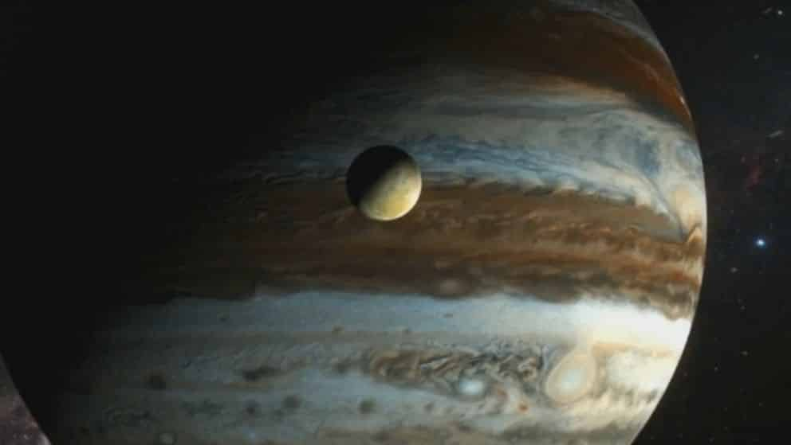
If our tiny moon, in a close simple orbit can make these influences, what about larger, greater stellar bodies and much more complex orbital arrangements? Indeed…
Let’s start with some basic orbital dynamics.
Orbital Dynamics 101
Historically, it was the observed the orbital motions of double stars that helped to prove the validity of Newton’s description of gravitational attraction. As well as his impressive laws of motion. He applied these rules to everything in the heavens. Not just to the planets and periodic comets but equally to the far away celestial motions of the stars as they danced about in the darkness above.
The observation of these distant stars helped lay the foundation for theories of stellar structure and evolution.
Gravitational Dynamics
In astronomy, Kepler's laws of planetary motion are three scientific laws describing the motion of planets around the Sun, published by Johannes Kepler between 1609 and 1619. These improved the heliocentric theory of Nicolaus Copernicus, replacing its circular orbits and epicycles with elliptical trajectories, and explaining how planetary velocities vary. -Kepler's Laws of Planetary Motion
There’s a reason why we call the laws related to the orbits of planets “Kepler’s Laws”. It began about four centuries ago. And the fellow that kicked off this relationship was a man by the name of Johannes Kepler.
Back in the day he wanted to explain his theories to the learned men in power. To this end, he wrote a book. In the book he explained the effects of gravity within the solar system. It was a well researched and well written work, and titled the Epitome of Copernican Astronomy, Books IV & V (1621) by Johannes Kepler.
By analyzing measurements of the motion of Mars (made by Tycho Brahe earlier), Kepler deduced his three principles of planetary motion (diagram, below):
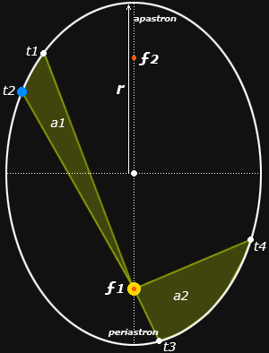
First Law. The orbit of every planet is an ellipse with the Sun at one of the two focal points of the ellipse. The Sun or more massive star is located at the focus ƒ1, and the orbit describes the motion of a planet or the less massive star in a binary.
Second Law. A line from the star at ƒ1 to another star or planet sweeps over equal areas in equal intervals of time. Therefore the ratio between two areas swept out by a planet is equal to the ratio between the two time intervals: a1/a2 = (t1-t2)/(t3-t4). This describes orbital velocity as greatest at periastron or smallest orbital separation between the two bodies, and slowest at apastron or point of largest orbital separation.
Third Law. The square of the orbital period of a planet is proportional to the cube of the semimajor axis of its orbit. The semimajor axis is the distance r measured from the center of the ellipse to the point of periastron or apastron. If the ellipse is a circle, r is the radius of the circle.
These are often imprecisely called Kepler’s “Laws,” although they are not physical laws in the scientific sense but empirical principles or generalizations. However they are the phenomena that scientific laws must explain.
Newton’s Mechanics.
This is pretty much standard fare for most engineering students.
The geometric formulation of the laws of motion described by Galileo was accomplished by Isaac Newton’s Philosophiae Naturalis Principia Mathematica (1687) — the mathematical principles of natural philosophy. Notice that “science” was known as “Natural Philosophy”.
Science = Natural Philosophy
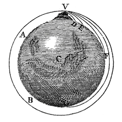
Newton’s “thought experiment” was to imagine a powerful cannon at the peak of a very high mountain (at V, diagram above). According to Newton’s first law of motion, a cannonball fired from the perfectly level cannon would tend to travel forever in a straight line at a fixed velocity and kinetic energy. But the continuous downward pull of Earth’s gravity would bend the path into a parabolic trajectory until the cannonball hit the Earth at D.
If the powder charge in the cannon were increased, the initial velocity of the cannonball would be greater, its kinetic energy would be greater, and it would travel farther, to E or even to F. Eventually, if enough powder were used to impart a sufficiently high initial velocity, the cannonball would circle the Earth and return to V in a closed orbit.
This illustrates that planetary orbits are possible because the orbital velocity balances the gravitational acceleration, and also suggests that circular orbits contain the minimum orbital velocity or lowest energy for a given orbital radius. Higher energy orbits would be increasingly elliptical, up to the point where the orbital energy was sufficient to produce an escape velocity and the observed section of the trajectory or “orbit” would be in the form of a parabola or hyperbola.
Newton showed by a geometrical proof (not by the calculus that he invented for numerical analysis) that an elliptical orbit must be produced by an inverse square mutual attraction between two orbiting bodies:
Fd2 = Fd1·(d1/d2)2
As the distance between two bodies is changed, the gravitational attraction between them is changed by the square of the ratio of the distances. The corresponding kinetic energy necessary to sustain the orbit is changed in the same proportion.
The Dynamical Equations.
Newton’s key insight was that gravity was a force continuously exerted on masses, and was therefore a form of acceleration. This linked it directly to his definition of force as exerted in the simplest case of a circular orbit that will have a constant radius and orbital velocity:
F = ma = mv2/r
where the acceleration due to gravity (a) is measured as the constant orbital velocity squared (v2, in meters per second) divided by the orbital radius (r, in meters). Because the force is the gravitational constant G = 6.674 x 10–11 kg–1 / m3 / sec–2, the measured radius and velocity create a ratio with the gravitational constant that reveals the system mass (m, in kilograms):
m = rv2/G
For rapidly orbiting spectroscopic binaries, the orbital velocity can be measured directly from the maximum observed Doppler shift in the spectral lines of the individual stars, with a correction applied for the tilt of the orbit to our line of sight.
For orbital velocities that are too slow or tilted too far to the line of sight to provide a measurable velocity, the period can be estimated from an orbital solution based on the changing position of the components measured across years or decades and a parallax estimate of the system distance, which yields the orbital radius. Then:
v2/r = 2πr/P
so that the necessary force is now defined as:
G = 4π2mr/P2
Finally, Kepler’s Third Law, P r3/2, generalizes to elliptical orbits, and gives
G = 4π2r3/(M1+M2)P2
where the masses of the two orbiting bodies are M1 and M2.
The Solar Standard Formulas.
Because the Earth is only about 0.0001% (one millionth) the mass of the Sun, the mass of the combined system is effectively the mass of the Sun, and the Earth’s period at the Earth’s average orbital radius is effectively a measure of the solar mass. This means the dimensions of the solar system can provide units of measurement that are already standardized on the gravitational constant, so it can be dropped from the equations.
If solar standard units are used — the astronomical unit (AU) for the semimajor axis r, solar mass M⊙ for the combined mass of both components, and years for the orbital period P — then the three possible versions of Kepler’s Third Law simplify into the elegant:
Pyears = [ rAU3/(M1+M2)⊙ ]1/2
rAU = [ P2years·(M1+M2)⊙ ]1/3
(M1+M2)⊙ = r3AU/P2years
In the case where the observed orbit is too slow to yield an orbital solution, the relative mass of the two components of the system can be estimated from their apparent magnitudes. Assuming that both stars are on the main sequence (and therefore have a luminosity that corresponds to the mass), the system mass ratio (q) is estimated as:
q = 10–(M2–M1)/10
where M2 and M1 are the absolute magnitudes of the fainter and brighter star in the pair (so that the exponent is always either zero or a negative fraction). Thus two stars of equal magnitude and spectral type have equal masses; a pair that differs by one magnitude has an estimated mass ratio of q = 10–1/10 or roughly 0.8; a two magnitude difference yields q = 0.6, and a three magnitude difference q = 0.5.
The fact that [1] the orbital dynamics are determined by the mass of the components, and [2] a parallax estimate of distance yields the absolute luminosity of the components, that allowed the stellar mass/luminosity relation to be determined. This was done through the painstaking, century long measurement of a small number of eclipsing variable stars. These variable stars are spectroscopic binaries and closely orbiting visual double stars within a few hundred parsecs of the Earth.
Building a multi-star orbital systems
The most effective way to understand the binary orbit is to build one — from the simplest possible to the more complex.
And now, after all that interesting and fun preambles, we can get to the meat of this discussion…
Simple Binary Solar System
The simplest possible binary system consists of two identical stars in a perfectly circular orbit.
Circular orbits are mostly found in close orbiting binaries with periods of around two weeks or less.
A classic example is the eclipsing variable star beta Lyrae with a period of 13 days.
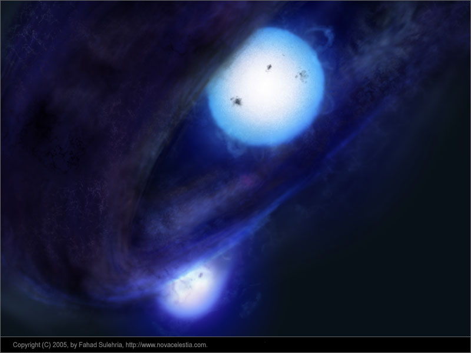
The total system mass is M1+M2. To calculate the orbital period using Kepler’s third law, we use the distance between the two stars as the orbital radius (r): this distance, in combination with the system mass, determines the amount of gravitational force acting on the system.
However, the two stars do not orbit one around the other.
Instead, both orbit around their common center of mass or barycenter at the center of their shared orbit and always on a line between them.
This means they have the same orbital period.
Because the orbital radius is constant the gravitational force is constant, so the stars orbit at a constant orbital velocity: v1 = v2. A circular orbit contains the lowest orbital kinetic energy for orbital radius: all the orbital energy is contained in the angular momentum.
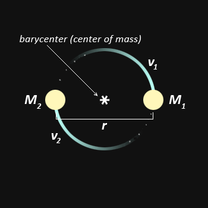
This simplest of all possible binaries can be complicated in two ways.
The First Complication – Stars of different mass
First, in the vast majority of double stars, the two components are of unequal mass.
The two stars still follow circular orbits, but the relative distance of the stars from their center of mass is proportional to the mass ratio, M2/M1, of the components: d1/d2 = M2/M1 In the same way that a heavier weight must be placed closer to the fulcrum of a balance beam, the heavier star must be closer to the barycenter.
As a result, the more massive star orbits entirely inside the orbit of the less massive star.
The orbital radius as used in Kepler’s third law is still the distance between the stars; the two stars are still connected by a line through the barycenter; they orbit in the same plane; they have the same orbital period.
Because the more massive star has a smaller orbit it has a lower orbital velocity, again proportional to the mass ratio: v1/M2 = v2/M1.
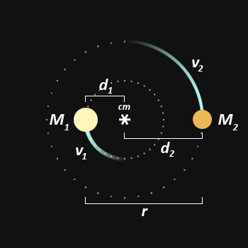
The Second Complication – Oscillation
The second complication, also found in the vast majority of known double stars, is that the total orbital energy is larger than the angular momentum of a circular orbit.
This excess energy causes the orbital radius to oscillate in synchrony with the orbital period, which sends the two stars into opposing elliptical orbits, defined by the orbital eccentricity (e): e = (1 – b2/a2)½ where a is the semimajor axis of the ellipse, half the longest dimension.
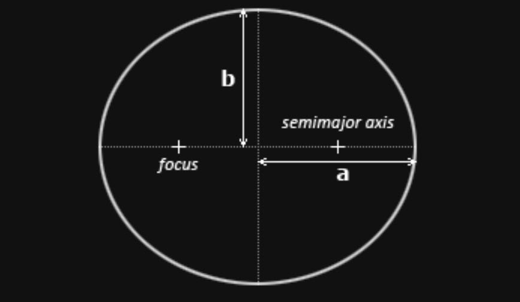
The next diagram shows a system of eccentricity 0.5, which is about average for all binary stars. Their common center of mass is located at one focus of each orbital ellipse.
Six features define the relationship between the barycenter and the separate orbits of the binary components:
- The two stars are always connected by a line through this fulcrum point,
- both component orbits and the barycenter lie in a single plane,
- both components orbit in the same direction.
- both have the same orbital period,
- the relative distances of the components from the barycenter and the relative size of their average orbital radius (r) are always equal to the system mass ratio, and
- both orbits have the same eccentricity.
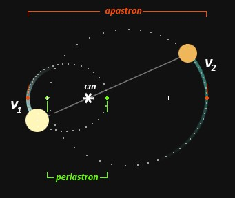
The more massive star orbits more slowly in a proportionately smaller orbit.
The actual distance (d) of each component from the barycenter, for any radial angle dθ measured in a cartesian plane with the origin at the barycenter of the system, is determined by the shape equation:
d = a·(1–e2)/[1+(e·cosine(θ))]
and
X = d·cosine(θ), Y = d·sine(θ)
The elliptical orbits produce a continuous change in the distance between the two stars — the synchronous orbital oscillation — from a point of maximum separation or apastron to a point of minimum separation or periastron.
Time related orbital attributes are usually measured from the time of periastron passage, — at that point the stars are closest and also moving most rapidly so the point can be observed most accurately.
Because the distance between the stars changes, their orbital velocities must change to match the changing force of gravitational attraction .
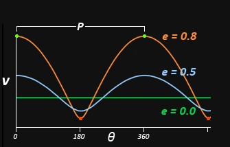
This varies with the distance (d) of each component from the barycenter:
v2 = GM(2/d – 1/a) ≈ 1/d
The plot of velocity on orbital angle (θ) shows that a circular orbit has constant velocity, and an eccentric orbital velocity follows an approximate sine wave, but with a narrowed peak at the lowest velocity (apastron) and a broadening of the curve at high velocity (periastron).
In fact, it takes each component a longer time to pass through the apastron rather than periastron half of the orbital ellipse, as shown by the equal time spacing of the orbital dots in the diagram.
As the eccentricity of the absolute orbit increases, this narrowing and broadening of the velocity curve becomes more pronounced.
Kinetic orbital energy is transformed into potential energy en route to apastron, and the orbit is bound so long as the minimum orbital velocity is less than the escape velocity.
All the dynamics are driven by oscillations between kinetic and potential energy: at all times the angular momentum of the components is conserved.
Absolute Orbit
Although elliptical orbits are by far the most common, all the orbits in 1 to 3 (above) represent the absolute orbit of a binary star, the dynamical pattern of their motions as observed from a frame of reference comoving with the barycenter of the system.
Relative Orbit
Unfortunately the barycenter of a binary system is invisible, so we cannot use it as a reference point to measure the separate orbital motions.
Instead, we simply assume that our frame of reference is anchored on the primary (more massive) star, and measure the movement of the secondary star in relation to it.
This produces a mathematically much more convenient relative orbit (sometimes misleadingly called the true orbit). It has the same eccentricity and orbital period as the absolute orbit but always has a larger dimension.
In other words, its major axis or longest dimension is the sum of the periastron and apastron distances, whereas the longest dimension of the absolute orbit is the apastron distance alone.
The average orbital radius (r) is now half the longest dimension or semimajor axis (a) of the ellipse, and this is the radius distance used in Kepler’s third law.
However, because we often do not know the precise distance to a double star, the semimajor axis (a) is given in arcseconds — as it would be measured on the sky if the ellipse of the relative orbit were visible.
If the distance (D) in parsecs is known, then we can convert a (in arcseconds) to r (in astronomical units):
r = aD
To define the relative orbit, visual double stars are measured as the position angle and distance in arcseconds of the smaller star in relation to the larger.
But the relative orbit is not simply a measurement convenience: the entire apparatus of orbital calculations, like Kepler’s Laws, assumes this simplified orbital geometry.
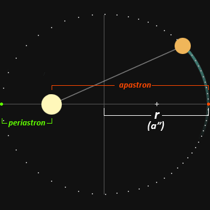
A third complication
A final complication does not arise in the binary orbit itself but in our point of view when we measure it.
Nearly always, the plane of the absolute and relative orbits, the semimajor axis of the relative orbit, and the angular separation between the components, are tilted in relation to our direction of view.
This can radically alter both the apparent eccentricity and measured dimensions of the orbit.
The points at which the two components are either closest or farthest apart are no longer the periastron or apastron, the apparent separation is typically less than the actual separation, and the eccentricity of the orbit is different.
Complex mathematics are necessary to correct for the foreshortened dimensions and retrieve the relative orbit in its true proportions, and they depend critically on our estimate of the inclination (i) and line of nodes (ω) of the orbit in relation to the relative orbit.
In the diagram (below), the orbit is inclined 45° to our line of sight (i = 45° or 135°), on a line of nodes that is (in the relative orbit) 45° from the minor axis of the ellipse.
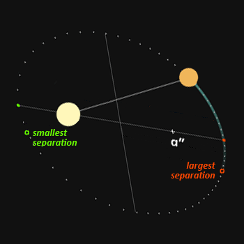
Summary on the orbital dynamics of binary star systems.
To summarize, binary stars can be represented in one of three ways:
(1) The absolute orbit or joint physical motion of the two stars in a reference frame comoving with the center of mass of the binary system, from a viewpoint perpendicular to the orbital plane of the components;
(2) The apparent orbit of the two stars in a reference plane tangent to the celestial sphere at the primary star, and measured assuming the primary star is fixed and the secondary orbits around it;
(3) The relative orbit (sometimes called the true orbit), which is a transformation of the apparent orbit as it would appear if the binary orbital plane were tangent to the celestial sphere.
As the center of mass, the barycenter traces the galactic orbital trajectory of the binary system which, if it were visible, would appear as a straight line proper motion across the celestial sphere.
In closely orbiting, short period binaries, the two components of the system appear to oscillate or “wiggle” back and forth around this straight line path.
If the second component is too faint to be optically visible, the direction and pace in the proper motion of the primary star will appear to change periodically, and these perturbations allow the presence and mass of the secondary to be estimated.
Both Sirius and Procyon were first identified as binary stars in this way.
Trinary Star Systems
What About Triple Stars? Are binary orbits the most complex possible? What about triple, quadruple, quintuple stars?
The answer is that, in nearly all cases where stable multiple systems have been identified, the orbits are dynamically segregated binary orbits.
If it is a triple star, then the third (single) component orbits the binary at a much greater orbital radius than the binary, forming a “binary” of a binary and single component.
If it is a quadruple star comprising two binaries, then the binaries orbit their common barycenter at much greater distances than the orbits of either binary, in effect forming a “binary” of two binary components …
…and so on.
The basic principle is that orbits are spaced dynamically so that the inner orbits are not perturbed by the motions of the outer components.
How far apart is far enough?
Observations of multiple stars in the solar neighborhood suggest the separations are 100 to 1000 times the separation inside the binary unit, and computer simulations suggest that these systems can be both stable and bound with an outer orbital radius of 100,000 AU or more.
Current theories of star formation suggest that multiple stars form as a result of turbulent fragmentation inside the same collapsing cloud core, and computer simulations show that triple stars born in such close proximity will dynamically “unfold” into a binary plus single or 2+1 system by transferring angular momentum from the binary pair (making their orbit smaller) to the singleton (making its orbit larger, more energetic and typically more elliptical).
The strange and the odd.
There are a few arcane orbital configurations of three stars that can coexist in close orbit with each other, but it is difficult to see how these would form naturally.
Instead, multiple stars that cannot reach a stable segregation of orbital energies are most likely to break apart, always by keeping the binary elements intact.
Double Star Orbital Elements
The orbits of binary systems can be analyzed if sufficiently accurate positional (or visual) measurements of angular separation and position angle are available across a substantial part of the orbital path.
In general the most accurately described orbits have an inclination that is not close to 0° or 180° and have been measured over more than half the complete orbital period.
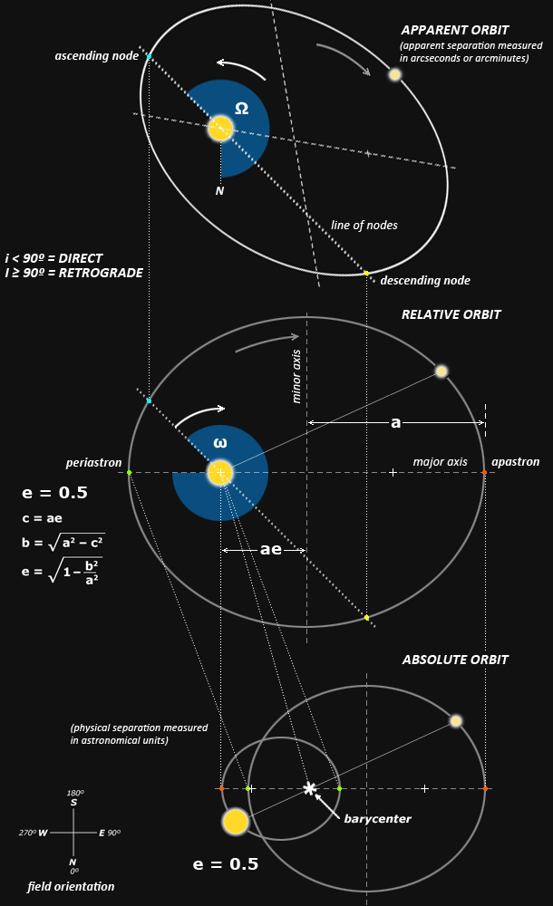
The diagram (above) summarizes the relationships between the absolute, relative (or “true”) and apparent orbits, using the calculated orbit of iota Leonis as an example.
Key Constraints
The key constants, indicated by the dotted lines connecting the different orbits, are:
(1) the angular separation or apparent distance between the components at every point in the orbital cycle (including apastron and periastron) is identical between the absolute and relative orbits; and
(2) the angular width of the line of nodes (between the ascending and descending nodes) is identical between the relative and apparent orbits.
Distances
Distances between the components in the apparent orbit are described in units of angular width (such as arcseconds or arcminutes), as these are the units of the visual measurements; arcseconds are also used to describe the semimajor axis of the calculated relative orbit.
Distances between the components in the absolute orbit are described in terms of astronomical units (or kilometers), and separation in astronomical units can also be applied to the relative orbit, simply by multiplying the arcsecond length of the semimajor axis (a) by the distance of the system in parsecs.
Important notes
Note that the angular dimension of the secondary orbit major axis is always smaller in the absolute than in the relative orbit. The eccentricity of the orbits is the same. However, the eccentricity of the orbits is generally not the same between the relative and apparent orbits.
In addition, the points where a binary star apparent orbit presents the smallest and largest angular separation (green dots in diagram) are typically not the apastron and periastron of the relative orbit.
Additionally, the two points typically do not lie on a line through the primary star. This means the ephemeride date of periastron passage will not indicate the time of closest visual separation.
The table (below) indicates the principal orbital elements in the apparent orbit and relative orbit (sometimes called the true orbit).
| element | symbol | apparent orbit | relative orbit |
| Dynamical Elements | |||
| period | P | the time for the system to complete one sidereal revolution | |
| mean motion | n | = 360°/P | |
| periastron | . | the projection of this point | the point in the relative orbit where the distance between the two stars is smallest and orbital speed is greatest |
| time of periastron passage | T | date and/or time of the (usually most recent) periastron passage of the two stars | |
| eccentricity | e | . | the deviation of the relative orbit from a circle, calculated as e = √1–(b/a)2 |
| semimajor axis | a | the projection of this line | the distance (usually in arcseconds) in the relative orbit from the center C to the orbit at periastron or apastron; equivalent to the projected average orbital radius. |
| Campbell Elements | |||
| orbital inclination | i | the direction of secondary rotation: i < 90° = direct (counterclockwise) i ≥ 90° = retrograde (clockwise) |
the inclination of the relative orbit to the plane of the sky, measured on the north side of the line of nodes with the secondary rotating in direct (counterclockwise) direction; i = 90° when orbit is perpendicular to line of sight |
| line of nodes | . | a line through the primary star and both nodes, common to both the apparent and relative orbits | |
| position angle of ascending node | Ω | position angle of ascending node measured counterclockwise from celestial north | . |
| argument of periastron | ω | . | the angle in the relative orbit from the ascending node side of the line of nodes to the periastron side of the major axis, measured in the direction of secondary rotation |
| Other Orbital Elements | |||
| apastron | . | the projection of this point | the point in the relative orbit where the distance between the two stars is farthest and orbital speed is slowest |
| line of apsides | . | the projection of this line | a line in the relative orbit through the periastron, the primary star, and the apastron (= major axis of ellipse) |
| center | C | the projection of this point | the geometric center of the relative orbit, midway between the two foci |
| semiminor axis | b | the projection of this line | the distance (usually in arcseconds) in the relative orbit from the center C to the orbit, perpendicular to the semimajor axis |
The orbital plane of the absolute orbit is almost never viewed in an orientation perpendicular to our line of sight from Earth. That would be completely extraordinary.
The orbital inclination (i) indicates the tilt of the relative orbit, which distorts both its apparent dimensions and eccentricity.
The inclination combines two different features of the relative orbit. First, it indicates the tilt of the plane of the relative and absolute orbits as an angle between the line of sight to Earth and the plane of the relative orbit, from 0° to 180° (diagram, below).
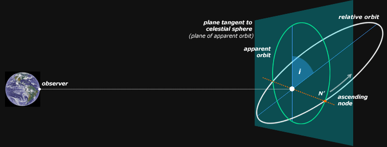
Second, the sign of the cosine of the inclination determines the direction of the secondary orbital motion as viewed from Earth: a direct (counterclockwise) orbit is coded as an angle between 0° and 90° (positive cosine), and a retrograde (clockwise) orbit is coded as an angle between 90° and 180° (negative cosine).
The line of nodes is the line formed by the intersection of the two planes of the true and apparent orbits, measured in counterclockwise direction from a line to the Earth’s celestial north; it always passes through the primary (brighter or more massive) star.
The ascending node is the point on the line of nodes where the component star passes through the line of nodes and is moving away from Earth.
In the great majority of binary stars where this cannot be determined due to an unmeasurably small orbital velocity, it is arbitrarily assigned to the position angle that is less than 180°.
Thus, the inclination and ascending node in many cases represent an arbitrary rather than physical description of the binary system.
Note that the periastron rather than apastron is preferred as an orbital parameter because the relative orbital velocities of the two components at that point are at maximum. Either the radial velocity or the positional parameters (or both) will change most rapidly at that point, which usually minimizes error in the estimation of the time of periastron and therefore error in the predicted future relative positions of the components.
Diagramming a Relative Orbit for a Double Star
The Campbell elements can be used to diagram both the true and apparent orbits, and this is quite easy to do when working in Photoshop. The diagram below of iota Leonis provides a template.
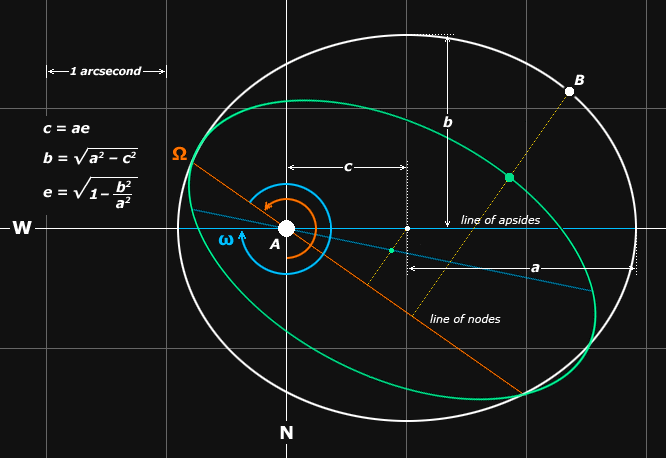
1. Determine from the arcsecond scale of the semimajor axis the total system width and image scale. Use a large enough scale to minimize rounding errors. In the diagram, the semimajor axis equals 1.91″, so the system width is about 4 arcseconds. The scale chosen for the example diagram is 120 pixels = 1 arcsecond.
2. Draw the cartesian x and y axes; the origin is the location of the system primary star.
3. Calculate c = a·e and convert to the image scale. In the example, c = 1.91·0.53 = 1.01 arcseconds, and 1.01·120 = 121 pixels. Measure and mark c on either the x or y axis of the plot, which becomes the line of apsides of the relative orbit.
4. Scale a, then measure and mark a+c along the line of apsides. In the example, the pixel scale of a = 1.91·120 = 229 pixels, so a+c = 229+121 = 350 pixels from the origin (or 229 pixels from c).
5. Calculate and scale b = √a2–c2, then measure and mark vertically from c. In the example, b = √2292–1212 = 194 pixels.
6. Using the ellipical marquee tool while holding down the “Alt” key, click on c and stretch the marquee to create an ellipical area that exactly matches the marked distances a and b. Create a new layer, and fill the window; then use Modify —> Contract to reduce the selected area by the orbit line thickness you desire. Delete the window contents to create the relative orbit. Mark the orbit periastron, which is the end of line of apsides closer to the origin of the plot (the location of the primary star).
7. Create a new layer and draw a horizontal or vertical line, then rotate the line to correspond to the angle given as the argument of the periastron (ω). Note that if the angle of inclination is less than 90° then you must measure this angle ω in clockwise direction from the periastron. Move the rotated line so that it intersects the cartesian origin and the relative orbit. This rotated line is the line of nodes, and its intersection with the relative orbit at angle ω is the ascending node.
8. Copy the line of nodes layer, and rotate this line clockwise the PA of the line of nodes (Ω). This is the line of the primary star’s right ascension in the apparent orbit on the celestial sphere.
9. Merge the orbit layer with the line of nodes layer, and copy this layer. Draw (copy) the line of apsides and point c onto this copied layer.
10. Rotate the copied orbit layer so that the line of nodes is exactly either horizontal or vertical, then use the Transform command to reduce the scale perpendicular to the line of nodes by a percentage equal to the cosine of the angle of inclination. In the example, the line of nodes is at 35° to the horizontal axis, so the copied layer was rotated counterclockwise by the same amount ( –35°). Then i = 128°, and cos(i) = –0.62, so the copied orbit was reduced vertically to 62%.
11. Rotate the copied orbit layer in the reverse direction so that the line of nodes is in its original orientation. Align the copied orbit so that the two orbits intersect at the line of nodes, and the intersection of the lines of apsides and nodes in the copied layer is at the origin of the plot. This is the apparent orbit.
12. Merge the orbits, and rotate them so that the line of right ascension is vertical, with north at the bottom.
13. If desired, use the catalog position angle for the secondary star to locate the star on the apparent orbit. Then use a line perpendicular to the line of nodes, and through the location of the secondary on the apparent orbit, to locate it on the relative orbit.
14. If necessary reduce and crop the canvas to the finished image size, and label elements as needed.
Multiple stars can be plotted in the same way, provided the orbital elements are available separately for hierarchical centers of mass: first A/B, then AB/C, then ABC/D, etc.
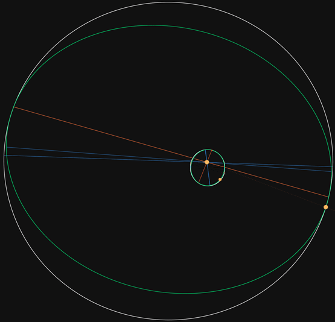
The diagram (above) of zeta Cancri (STF 1196) was created by first plotting the orbit of the AB pair, then the orbit for the AB/C “pair”, rotating them both so that celestial north is at the bottom, then superimposing the primary of the AB pair on the “primary” focal point of the AB/C pair.
Further Reading on the orbital mechanics of complex solar systems.
Multiple Star Orbits – an amusing group of animated double star orbits, helpful to visualize how complex gravity can be.
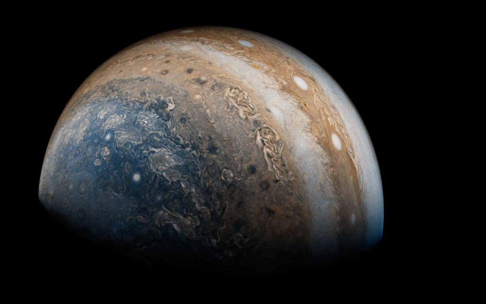
But what about intelligent life?
Most people reading this has little care about orbital dynamics, or the makeup of other solar systems. I recognize that. But to understand the great variety of life in our universe, you need to recognize that the orbital configurations of solar systems has a massive influence on the evolution of particular intelligence.
Which, being said, allows me to create some postulates…
- Extraterrestrials that wish to move or colonize another solar system would search for ones resembling their own home environment.
- The greater the deviation from their home environment, the greater the likelihood of catastrophic colony failure.
- There are gravitational, and orbital influences on the biology of all creatures and given a strange or uncomfortable (new) environment, would result in abnormalities in biological functioning.
And most pointedly…
- It is unlikely that dissimilar extraterrestrials from dissimilar worlds around dissimilar solar systems would find comfort within our solar system. Those that are here are here for a reason, and their home solar system is either the earth, or a star very close by.
The world has all sorts of extraterrestrial visitors, and many come from great distances. But the ones that stay, and the ones that make a go at creating colonies, or are busy getting involved in human activities are those that have a vested interest in this earth environment and the human species.
Which brings me up to the following criteria;
- The earth is a sentience nursery for the development of intelligent species. It is one of five in our general region.
- Those most interested in the development of the human sentience structure are the type-1 greys and the Mantids. Both come from this galactic region, if not the earth directly.
- Any other creature, or extraterrestrial that hails from a distant and / or different solar system or galactic region are here for a limited time only.
Extraterrestrial disinformation.
There is a great deal of disinformation on the internet. When you look at it from the prism of MAJestic, their stories sound fantastical bordering on criminal.
My research has also come up with a goodly number of reports of Pleiadeans and other "Humanoid", "Blonde", and "Nordic" Star Visitors who are virtually indistinguishable from humans. Indeed, Native American and other indigenous people's traditions point to the Pleiades star cluster as their origin worlds. Others tell of people from the Sirius, Orion, and other star systems. If you were to place a pair of sunglasses on one of these "Nordic" Visitors, they would be indistinguishable from a Scandinavian-American citizen. Councillor Meata of the Star Nations High Council says that the Pleiadeans are especially gifted in medicine. When people are brought onto "ships" for physical body work, healers like the Pleiadeans often work with them. 940 B.C.-present day. The Saami are a human-looking race who migrated from Barnards Star the 6 light-years to Earth around 940 B.C. and live among us. They are resident in the Saami (Lapland) region above the Arctic Circle in Norway, Sweden, Finland, and northwest Russia Kola Peninsula. The Saamis are of extraterrestrial origin as reported by USAF Airman Charles Hall, who had security clearance for contact with Star Visitors. Hall has described the Saami as looking Human, with broad faces, high cheekbones, tall foreheads and darkish hair color. The Saami are distinguished by their having only 24 teeth instead of the normal-human 32 teeth. Also, these Saami people can regrow a tooth to replace any adult tooth which has been removed. They prefer a dramatically-cold climate. Otherwise they are indistinguishable from Humans. Some of these Saami (Laplanders) migrated to the U.S. and settled in northern-tier states such as Wisconsin. A number of Saami have intermarried with Europeans, so the degree to which their original Saami characteristics remain in the mixed-race offspring varies. -Star Visitor Species
So, whether this is true or not is a determination that you the reader will need to make. Just because it does not make sense to me, doesn’t mean that it cannot actually exist.
However, I argue that we have observed the solar systems where these entities supposedly came from. They are entirely dissimilar to anything regarding our human range of experience. Thus the logical questions should arise…
- Why are they interested in us?
- Why do they look like us?
- Why, if you read the articles about their “warnings”, do they want to get involved in our human Geo-politics?
- How could they adapt to easily to such a frighteningly different environment on the earth compared to their home system.
Personally, I think others (well meaning of course) are using the “extraterrestrial narrative” as a venue from which to “soapbox” their personal opinions on politics, the environment, and human nature. While in truth, they know nothing of the true and real state of affairs.
Conclusion
We can see what other solar systems are like just by using our telescopes on earth. We can study those stars and their solar systems. When we do so, we realize just how varied and diverse the universe is.
It is not filled with stars that look like our sun.
It is not filled with planets that look like our earth.
And it most certainly is not filled with creatures that look like us, act like us, and want to help us by giving us advice on the Geo-political issues of the day.
It is true that life forms readily in this universe, but they are more apt not to care about us humans on this obscure planet around this obscure star in the middle of nowhere. Those that do, do so for specific reasons.
Thus, when filtering out the real from the disinformation that abounds all over the place, we should pay particular attention to the basics…
- Any extraterrestrials that are here, are here for a good reason.
- Powerful governments have created agencies to work with them. Like MAJestic in the United States.
- In all cases, we want their technology, and are willing to exchange ANYTHING to get it.
- There are no benevolent entities that want to help the human species evolve. They all have their own agendas.